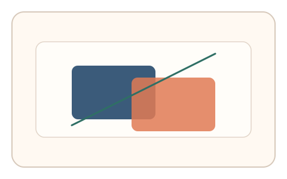
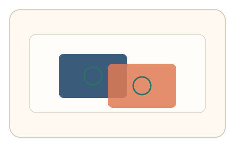

#57
视觉思考范式：扫描/错觉/全局-局部
已扩展
深度先验排序
依据遮挡、阴影或透视提示快速排序前后层级，利用深度先验与排序时序验证真实性。
概念原文
通过遮挡、阴影或透视提示形成深度暗示，用户快速排序“前后层级”；记录排序耗时与一致性。
借助人类深度先验与快速分层决策作为信号。
研究背景
人类利用遮挡、阴影和透视线索形成稳定的深度先验。测量层级排序的一致性与耗时，可形成可靠的视觉分层特征。
核心机制
- 展示包含遮挡与透视线索的场景。
- 用户快速排序前后层级。
- 记录排序耗时与一致性。
- 分析排序策略与反应时分布。
用户流程
- 步骤 1：用户看到深度线索场景。
- 步骤 2：用户拖拽或点击排序层级。
- 步骤 3：系统分析排序一致性并判定。
判定信号
排序一致性与反应时
深度先验通常产生稳定的快速排序。
回撤次数与排序路径
真实判断会出现短暂回撤与微调。
判定逻辑
综合排序一致性与反应时，要求与人类深度先验分布一致；排序随机或过快判异常。
对抗面
- 脚本直接读取图层信息排序
- 重放真实用户的排序序列
防御与缓解
- 随机化遮挡关系与透视角度
- 引入轻微噪声与位置抖动
- 叠加鼠标轨迹与微时序信号进行多信号验证
可达性与风险
提供简化场景或替代任务模式，避免对空间感知受限用户造成负担。
- 场景复杂度过高增加认知负担
- 小屏设备降低深度线索显著性
可视化状态

状态 1：深度线索
遮挡与透视形成层级暗示。

状态 2：层级排序
用户快速排序前后层级。

状态 3：排序判定
分析一致性与反应时。
参考资料
Depth perception
说明深度线索与层级判断。
Occlusion
说明遮挡作为深度先验线索。